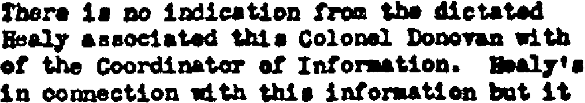

We already alluded to the role that the linguistic context can play in the character recognition process. We also see that OCR software packages come with linguistic databases or lexicons. What is the role of linguistics in the OCR process as we’ve just described it?
The linguistic support makes the OCR software faster and more reliable. Faster because linguistics allow the program to take valid decisions that would otherwise require a user intervention. More reliable because linguistics boost the accuracy of the OCR software: the system learns font shapes it didn’t know beforehand because the linguistic context points it in the right direction, and the certainty and autonomy of the OCR system increases.
Basically, the system learns new characters through context analysis. Linguistic knowledge about syllables and words improves the OCR performance as the software finds correct solutions for difficult cases without the user’s help (“autolearning”).
Suppose that you have to read the word “president” where an ink stain makes the “r” look like an “f”. Looking things up in the English lexicon, the OCR software will detect autonomously that the word “president” is being read and that it doesn’t make any sense to recognize the symbol “fr”. Or the software doubts between a “c” and a “o” in the word “c?mputer”. The system knows that the syllable “com” is popular in English while the syllable “ccm” doesn’t exist. The recognition of the letter “o” is much more likely than the letter “c”.
Linguistics also offer valuable help to solve ambiguous cases such as an “O” which might be mistaken for a ‘0’. Another typical example is the letter “l” and number ‘1’ which have an identical form in many fonts — think of texts produced on old typewriters! The linguistic context helps to determine whether you are dealing with “l” or ‘1’.
The illustration below shows various shapes of ‘1’ and “l”. The shapes on the first line are unambiguous, the shapes on the second line are ambiguous, but linguistics can solve them. When the context does not suffice, the user intervenes.
Amongst other things, the linguistic module applies digram and trigram analysis. The frequency of 2 (digram) or 3 (trigram) consecutive letters gets analyzed: “on” and “str” are possible letter combinations in the English language, “0r” (with a digit ‘0’) and “5rt” are not.

Linguistic feedback even works when several languages are mixed on a single page. Think of a document where the French translation occurs alongside an English text — official documents in countries with several official languages, airline magazines and tourist information, what have you…
In such a context, the system detects word by word which language is used where. This is mandatory because you can have foreign proper names and product names showing up in a document. Think for instance of an English article on Paris…
To avoid proper names or foreign words from getting changed into known words of the primary language, the linguistic analysis produces no “hard” results. “Fuzzy logic” is applied instead to combine the recognition result with linguistic data and assign a weight to the possible solutions.
Even in ambiguous situations, the use of linguistics — the automatic detection of the language followed by the use of linguistic feedback — improves the recognition because ambiguities get sorted out. Think of “l” or “I” in “l’histoire”. The symbol must be an “l” (el) because the context allows me to conclude the word is French. The symbols “o” and “a” are ambiguous in many fonts: “love” versus “lave” gets solved if we can detect the language — French or English. (There you have it: love does not exist in French, though Americans like to think otherwise...)
Some OCR software allows the user to “boost” the accuracy further by loading user lexicons that reflect his company’s activity. User lexicons are word lists containing any term that does not occur in the “basic” general-purpose lexicons. Think for instance of technical, scientific, legal or other company-specific terms.
It is important to realize that advanced OCR software uses linguistics during the recognition phase, not after it! Don’t confuse the linguistic module of your text recognition package with a spell-check you would run on the text once it has been recognized. Linguistics play their role in the recognition process, they aren’t used “after the facts” to clean up the recognition results.
On the other hand, OCR systems are perfectly capable of generating valid results without the use of linguistics. Linguistics boost OCR, but OCR does not depend on linguistics! Think for instance of name lists, tables of figures and similar documents. When you’re just reading product names, part numbers, addresses and prices in catalogues, there is no linguistic context to be found in any lexicon. (In scientific, legal and technical literature, the context can be low at times because the specialized terms are missing from the lexicons.)
Another type of context analysis is not strictly linguistic but just as interesting: Uniform Resource Locators (“URLs”) such as www.amazon.com, ftp://bill-gates and https://wwww.how-ocr-works/history/document-revolution.html may be “proper names” but they get detected anyway by some OCR software.
Here again, the contextual knowledge improves the recognition: the slash (“/” symbol) easily gets taken for an “l” (el). Without a dedicated syntactical routine, you would probably get the reading result “http:llwww.amazon.com”… (And of course, once the URLs have been detected, they can be encoded as a hyperlink in HTML and other output. When your OCR software does this, any web page that gets mentioned in your documents is just a click away...)
Let’s take things step by step, shall we? — Take us where the rainbow ends! — B is for binarize — What gets read and what doesn’t — Lines, lineskew and drop letters — Segmenting words and characters — Stylized fonts — Why is OCR software called omnifont? — What’s the role of linguistics in the OCR process?
Home page — Intro — Scanners — Images — History — OCR — Languages — Accuracy — Output — BCR — Pen scanners — Sitemap — Search — Feedback – Contact